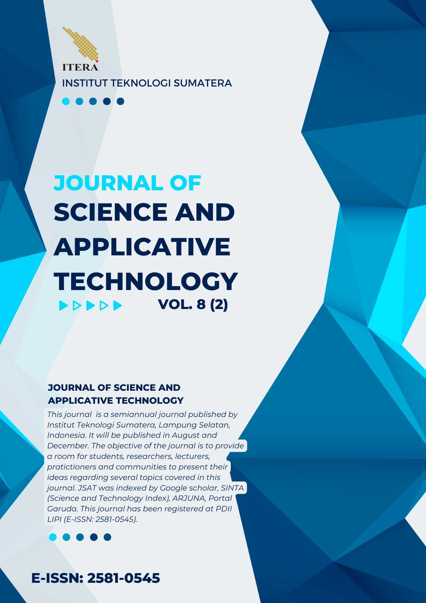
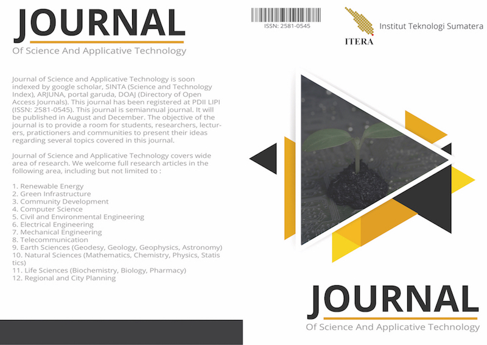
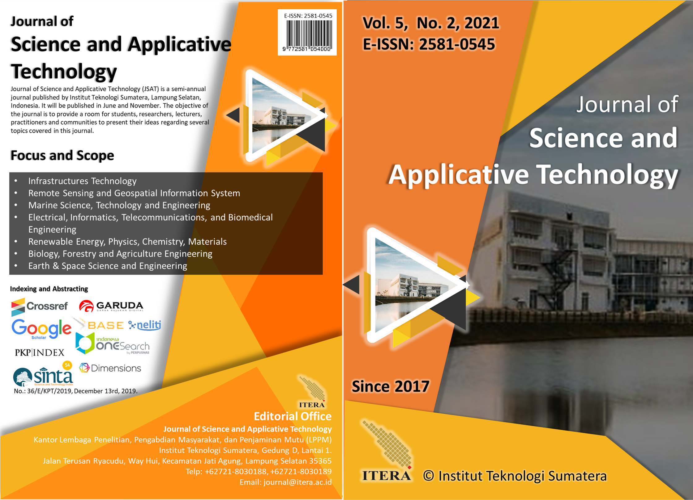
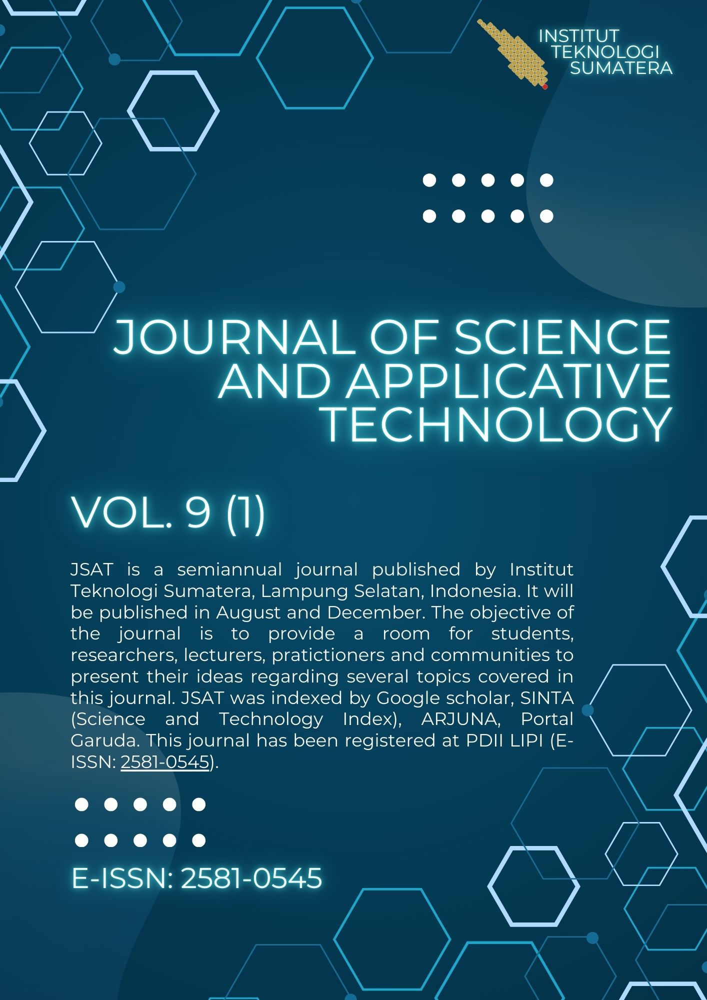
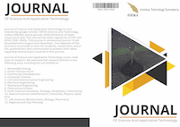
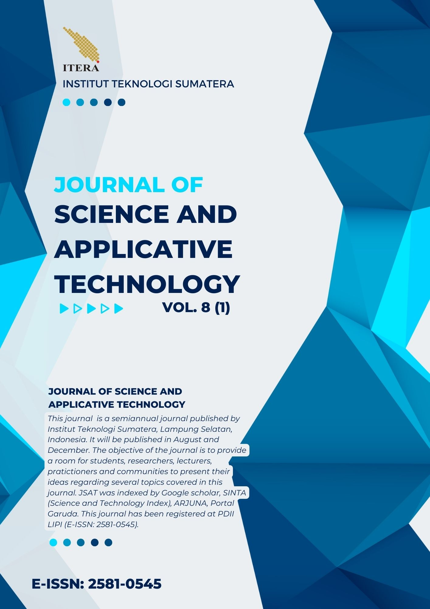
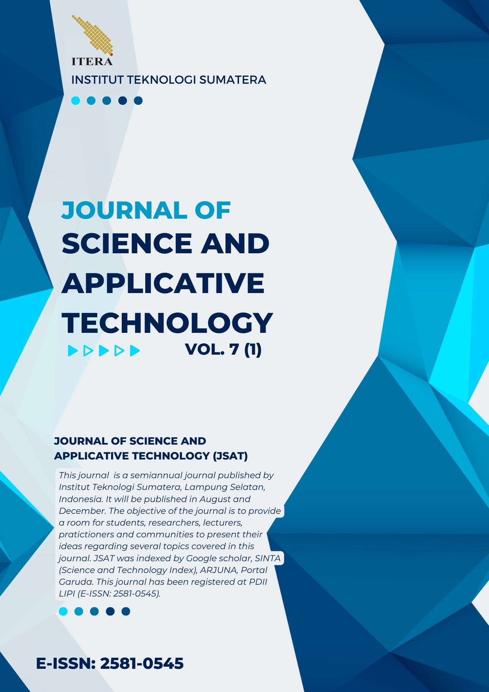
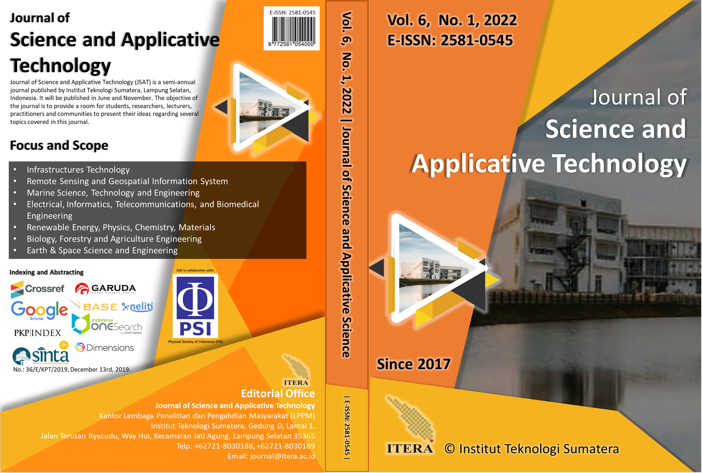

Archives
-
Journal of Science and Applicative Technology December ChapterVol. 8 No. 2 (2024)
This is a regular edition of Journal of Science and Applicative Technology (JSAT), JSAT publishes article twice a year on June and December.
E-ISSN: 2581-0545

All the content on Journal of Science and Applicative Technology (JSAT) may be used under the terms of the Creative Commons Attribution-NonCommercial 4.0 International License.
Journal of Science and Applicative Technology August ChapterVol. 1 No. 1 (2017)Journal of Science and Applicative Technology Vol. 1 No. 1 August Chapter
Journal of Science and Applicative Technology December ChapterVol. 7 No. 2 (2023)This is a regular edition of Journal of Science and Applicative Technology (JSAT), JSAT publishes article twice a year on June and December.
Journal of Science and Applicative Technology December ChapterVol. 6 No. 2 (2022)Journal of Science and Applicative Technology, Vol. 6, No. 2
This is a regular edition of Journal of Science and Applicative Technology (JSAT), JSAT publishes article twice a year on June and December.
Journal of Science and Applicative Technology December ChapterVol. 5 No. 2 (2021)Journal of Science and Applicative Technology, Vol. 5, No. 2
This is a regular edition of Journal of Science and Applicative Technology (JSAT), JSAT publishes article twice a year on June and December.
Journal of Science and Applicative Technology December ChapterVol. 4 No. 2 (2020)Journal of Science and Applicative Technology Vol. 4 No. 2 December Chapter
This is a regular edition of Journal of Science and Applicative Technology (JSAT), JSAT publishes article twice a year on June and December.
Journal of Science and Applicative Technology December ChapterVol. 3 No. 2 (2019)Journal of Science and Applicative Technology Vol. 3 No. 2 December Chapter
This is a regular edition of Journal of Science and Applicative Technology (JSAT), JSAT publishes article twice a year on August and December.
 ICoSITeR Special EditionVol. 2 No. 1 (2019)
ICoSITeR Special EditionVol. 2 No. 1 (2019)ICoSITeR Special Edition, Vol 2 No 1 (2019) is Proceeding published by Journal of Science and Applicative Technology.
ICoSITeR stands for International Conference of Science, Infrastructure Technology and Regional Development hosted by Institut Teknologi Sumatera. All papers already presented on ICoSITeR Conference on 2018.Please cite this proceeding as: Proceedings of International Conference on Science, Technology, Infrastructure and Regional Development (ICoSITeR) 2018
 Journal of Science and Applicative Technology June ChapterVol. 2 No. 1 (2018)
Journal of Science and Applicative Technology June ChapterVol. 2 No. 1 (2018)Journal of Science and Applicative Technology Vol. 2 No. 1 June Chapter
Journal of Science and Applicative Technology June ChapterVol. 9 No. 1 (2025)Journal of Science and Applicative Technology, Vol. 9, No. 1
This is a regular edition of Journal of Science and Applicative Technology (JSAT), JSAT publishes article twice a year on June and December.
Journal of Science and Applicative Technology December ChapterVol. 1 No. 2 (2017)Journal of Science and Applicative Technology Vol. 1 No. 2 December Chapter
Journal of Science and Applicative Technology June ChapterVol. 8 No. 1 (2024)This is a regular edition of Journal of Science and Applicative Technology (JSAT), JSAT publishes article twice a year on June and December.
Journal of Science and Applicative Technology June ChapterVol. 7 No. 1 (2023)Journal of Science and Applicative Technology, Vol. 7, No. 1
This is a regular edition of Journal of Science and Applicative Technology (JSAT), JSAT publishes article twice a year on June and December.
Journal of Science and Applicative Technology June ChapterVol. 6 No. 1 (2022)Journal of Science and Applicative Technology, Vol. 6, No. 1
This is a regular edition of Journal of Science and Applicative Technology (JSAT), JSAT publishes article twice a year on June and December.
 Journal of Science and Applicative Technology June ChapterVol. 5 No. 1 (2021)
Journal of Science and Applicative Technology June ChapterVol. 5 No. 1 (2021)Journal of Science and Applicative Technology, Vol. 5, No. 1
This is a regular edition of Journal of Science and Applicative Technology (JSAT), JSAT publishes article twice a year on June and December.
Journal of Science and Applicative Technology June ChapterVol. 4 No. 1 (2020)Journal of Science and Applicative Technology Vol. 4 No. 1 June Chapter
This is a regular edition of Journal of Science and Applicative Technology (JSAT), JSAT publishes article twice a year on June and November.
Journal of Science and Applicative Technology August ChapterVol. 3 No. 1 (2019)Journal of Science and Applicative Technology Vol. 3 No. 1 August Chapter
This is a regular edition of Journal of Science and Applicative Technology (JSAT), JSAT publishes article twice a year on August and December.
Journal of Science and Applicative Technology December ChapterVol. 2 No. 2 (2018)Journal of Science and Applicative Technology Vol. 2 No. 2 December Chapter
 ICoSITeR Special EditionVol. 1 No. 1 (2018)
ICoSITeR Special EditionVol. 1 No. 1 (2018)ICoSITeR Special Edition, Vol 1 No 1 (2018) is Proceeding published by Journal of Science and Applicative Technology.
ICoSITeR stands for International Conference of Science, Infrastructure Technology and Regional Development hosted by Institut Teknologi Sumatera. All papers already presented on ICoSITeR Conference on 2017.Please cite this proceeding as: Proceedings of International Conference on Science, Technology, Infrastructure and Regional Development (ICoSITeR) 2017
 Information
InformationIndexed by : 


JSAT is supported by:

Recommended Tools: 


JSAT Visitors:
All the content on Journal of Science and Applicative Technology (JSAT) may be used under the terms of the Creative Commons Attribution-NonCommercial 4.0 International License.Journal of Science and Applicative Technology
Published by Lembaga Penelitian dan Pengabdian Masyarakat, INSTITUT TEKNOLOGI SUMATERA
Address : Jalan Terusan Ryacudu, Desa Way Hui, Kecamatan Jati Agung, Lampung Selatan 35365
Phone : (0721) 8030188, (0721) 8030189